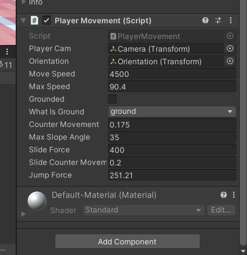
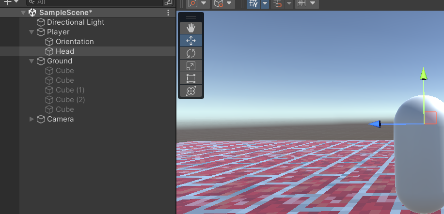

A first-person game is a game that has the perspective of the character. It can be almost any type of game, such as a platformer or a first person shooter. Examples of these include Portal, first person shooter games, and almost every VR games.
To start out, open up the hub and select create new project. From there, select 3D, name it and create the project.
To start off this project, open the Unity Hub and click new project. Make sure that 3D is selected for the type of game. From here, name the project what you want and click create project. Here you will see your workspace. To start, we right click the hierarchy and create a 3d object. We will go with the capsule. We will need to add a rigidbody component to it. Within that rigidbody, we will need to freeze the x, y, and z rotation. You'll also want to make sure interpolate is set to interpolate and collision detection is set to discrete. From here, we will also want to create a cube. This will be our ground. We can change the scale to fit under the player. We will need to move the camera up to face the character. In order to texture these, take the picture you want as the texture and drag it directly onto the item.

Click on the ground cube and open up layers in the inspector. Click on create new layer and make one labeled "ground". Go back to the cube inspector and change the layer to the new ground layer. Anything you want to be the ground needs to have this layer on it.
In order to add movement we add a script to the character. Create a script for your player and camera. In this script, we will give the character the ability to move. This code has been used from a another game developer online. Here is a link to their github for the code. Using other people's examples is very helpful within programming.
Copy the player movement script over to the script we created for the character, make sure to rename the title at the top of the code. Save it and go back to the editor. In the hier archy, create a new empty object and label it "camera". Put the main camera into this object within the hierarchy.
Click on the player and you should see a new section.
Under the player capsule, we will need to create two more empty objects. Label one "orientation" and put it within the player. Label the other "head" and set it up where you would want the camera to be. Put both of these objects in the character on the hierarchy.
Go back the the player's new section. Move the empty camera object with the main camera under it into the spot for camera. Put the new orientation object into the orientation section. This is done just through dragging it into the open space. Click the drop down menu for ground and click the ground layer we made earlier. Open the script we made for the camera and copy the move camera script from the website. Make sure to label the top of the script to match the name you gave your script. Give the script to the camera object that holds the main camera. From here, you can drag the "head" object you made into the script section.
Click play to test it out. Feel free to move the sliders around to what you want them to be.
From there, we need to make a physics material. In the files section, right click it, go under create and find physics material.

Change both frictions to be 0. Go to any ground blocks you've made and add the physics material to them. This allows you to slide and move better.
Finally, add blocks throughout your level to practice the movement with. These are all the basics for making a 3d first person game.